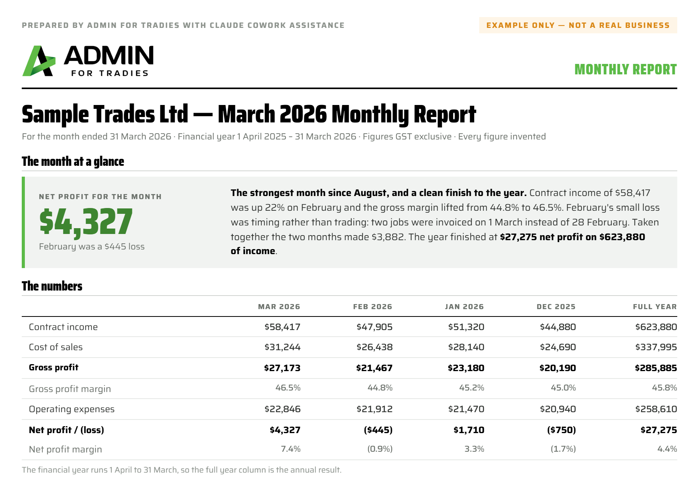
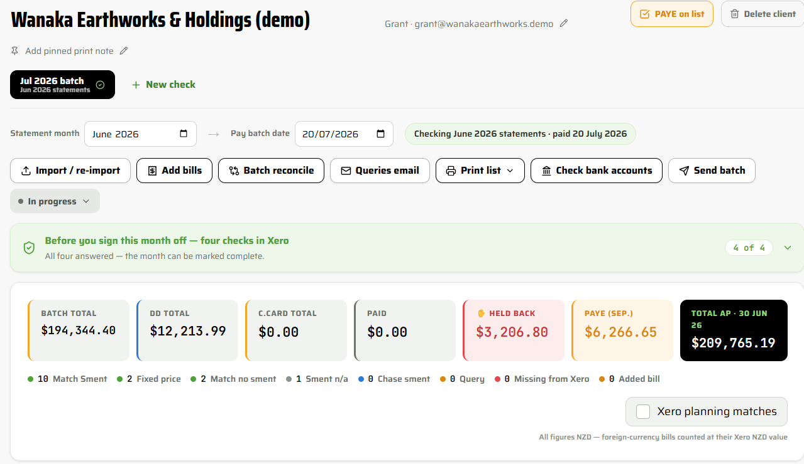

You know the one: a good tradie with two on the tools whose books cost you more time at year end than the fee covers. Big agencies can't serve that client profitably. I built my business so I can — and I do it with AI tools I have built myself, with guardrails, double checks and every key figure tied back to Xero.

Not AI for its own sake. Each of these was a limit on how well I could serve a small trade client and each one is now solved on live client work.
The answerThe Tradie Month End tools I built, plus my Claude month-end checklist, training and coding conventions. The repetitive checking is done in minutes, so the month-end crunch is no longer capped by my own hours — and I can take on more of your smaller clients without the quality dropping.
The answerThe checks are the same every month for every client and each one has to be answered to an outcome before a period can be signed off. Standards do not slip because it was a busy week.
The answerClients now get a written monthly report they can read, not just a set of Xero reports and I can take on work I could not have offered before. Your client is better informed and so are you.
Every supplier statement checked against Xero before a batch is paid. Duplicates, missing bills and part-payments surface first, only the queries go to the client.
Month-end figures and the GST return checked before filing, each flag worked to an outcome and recorded. Corrections are made in the right period, not found at year end.
Profit and loss with the year to date, the queries outstanding and a plain-English summary the owner actually reads. Behind it, the month-end checklist marked off: bank reconciliations balanced to nil, basic balance sheet checks, loan payments checked. A performance report where it is within scope.


I use AI every working day, I explore what it can do next and I build my own tools with it. That is the part I would like accountants to see — and to feel free to ask about.
A project per client, with my checklist, coding conventions and their own history in it. It does the repetitive checking and drafts the reporting. Paid subscriptions only, so client data is not used to train the models.
Where I built the Statement Checker and the P&L + GST Checker. No developer, no subscription per seat and the tools run on my own machine.
Paid AI subscriptions, so nothing a client gives me is used for training. Files stay on my OneDrive as they always have in bookkeeping practice. Clients are told I use AI. I build in guardrails and checking notes, limit what any AI agent can do in a browser and check the key figures against Xero. Nothing is filed or paid on its word alone.
The same approach would work in a practice. If you want to try it, I am happy to show you how I set a project up. It took me four months to learn; I can save you most of that.
Each client project holds their conventions — how entertainment, IRD interest, penalties, staff gifts and assets are treated in their books. Decided once, applied the same way every month.
New treatments get added as they come up. Consistency across the year and an answer I can point to when you ask why something sits where it does.
The audit file built through the year, not in July: reconciliations, the GST returns as filed, the queries and how each was resolved and the conventions used.
Less chasing, fewer questions back and a file that explains itself. That is the part I think you will care about most.
Depending on the work. Day-to-day processing at the lower end; month-end checking, reporting and advisory at the upper end. Fixed monthly fees where a client would rather have one number to budget against, the month-end pack is usually quoted that way and the small-tradie products are fixed-price by design.
Quoted before any work starts.
I have capacity for more small and medium trade clients and the systems to take them on. On medium trade businesses needing daily bookkeeping I bring in a contractor for the day-to-day work, and I stay on the file. If you have a client whose books are costing you time at year end, that is ideal work for me.
I do not do year end or tax and I do not give financial advice. My job is to make sure what reaches you is right and that the client understands it.
Christchurch and Canterbury firms — I am happy to come in for a demo and an AI chat, then put a couple of GST clients through the checkers so you can see what they find. Firms elsewhere in New Zealand, the same on a screen.
Yes. Admin for Tradies does not do year-end accounts, tax returns or financial advice. The accountant keeps the year end and the client; Monique keeps the books right through the year and hands over a pack that explains itself.
Monique uses paid AI subscriptions, so client data is not used to train the models. Files are stored on her OneDrive as in normal bookkeeping practice and clients are informed that AI is part of the workflow. Built-in guardrails, checking notes and limited agent use in browsers, with every key figure tied back to Xero. Nothing is filed or paid on AI’s word alone.
$75–$95 + GST an hour, or one-off Xero and payroll health checks at a fixed price. Tradie Month End is quoted as a fixed monthly fee. Every price is given before work starts.
I have a few contract bookkeepers I have used before and can call on to assist with more manual tasks. I am focused on growing my smaller client base, as these clients do not have immediate needs and their workflow can be balanced across the month. I can take on a larger client, but I would bring in a contractor from the start to assist — the client meets them first and confirms they are happy with the arrangement. Month end checks stay with me.
Small trade businesses of one to five people in Christchurch, Canterbury and across New Zealand on Xero, the clients whose books cost an accountant more time at year end than the fee covers.
Yes. Monique will come to a Christchurch or Canterbury firm for a demo and an AI chat, then put a couple of the firm’s GST clients through the Statement Checker and P&L + GST Checker so the firm sees what they find.
Try this. Ask your own AI about me. Download the briefing pack and ChatGPT, Claude, Copilot or Gemini can talk you through what I do, what it costs and whether I am a fit for your business.
Download the AI briefing packOne conversation and you will know whether it fits.
Monique Clow · 0275 895 895
monique@admin4tradies.co.nz